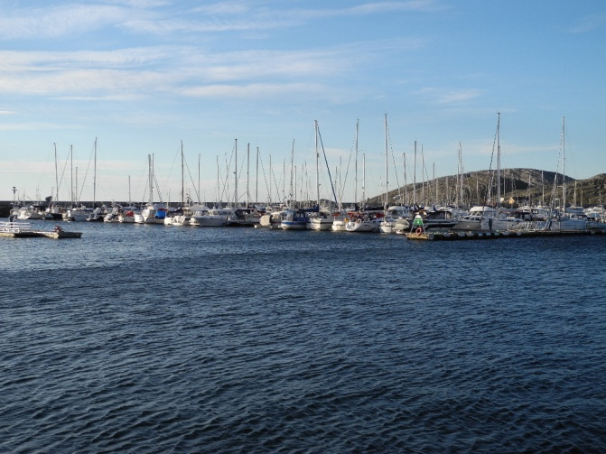
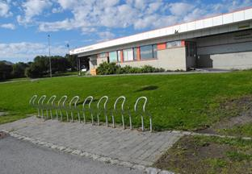

Бодо. Что приятно удивило в первые минуты прилета в небольшой городок Бодо - это большой по меркам города, очень чистый и удобный аэропорт. До центра города ехать недалеко, причем дороги очень хорошие. Что непривычно для россиян – в городских автобусах нужно пристегивать ремень безопасности, как в автомобиле. Автобусы ходят точно по расписанию. Если написано, что автобус придет в 12.02, то он придет именно в 12.02, но ни минутой раньше или позже. Если ты поехал в университет на одном автобусе и возвращаешься на нем же в течение часа, то за билет уже не платишь. Вообще, для студентов и пенсионеров в Норвегии существует огромное количество льгот и скидок. Например, за мои билеты на самолет выплачивалась компенсация, а для студентов существует единый проездной билет, по которому можно ездить и в поездах, и на автобусах по всей стране.
Каждые выходные жители Бодо выезжают за город на специально оборудованные площадки для скалолазания, выходят в море на катерах, байдарках и яхтах, в общем, отдыхают активно. Практически во дворе каждого дома для детей оборудованы спортивные площадки с батутом, гимнастической стенкой или скалодромом. Стоянки для велосипедов есть повсюду. У норвежцев вообще все рационально и удобно. Дома очень скромные, небольшие по размерам, лаконичные по архитектуре и очень добротные. В них есть все, что нужно для комфортной жизни. Даже одеваются норвежцы очень просто, но комфортно. Хотя норвежцы считаются первыми по уровню жизни, но они это заработали своим трудом и не кичатся своим достатком перед другими. Равноправие везде – обслужат одинаково и министра , и рабочего. Уровень жизни примерно одинаков у всех, возможности для карьеры –тоже, было бы желание и голова на плечах. Вернемся к достопримечательностям Бодо. В центре Бодо возвышается одна из его достопримечательностей - католический собор. Собор Будё был построен в 1956 году, представляет послевоенную архитектуру, а церковь Будина, находящаяся возле центра города, датируется 13-м столетием и представляет собой средневековую каменную церковь. Бодо красив и зимой .Полярный день длится с 3 июня по 8 июля, а в остальное время ночь. Сначала день становится просто серым, как сумерки. А полярной ночью можно увидеть северное сияние – самое незабываемое зрелище в Норвегии..